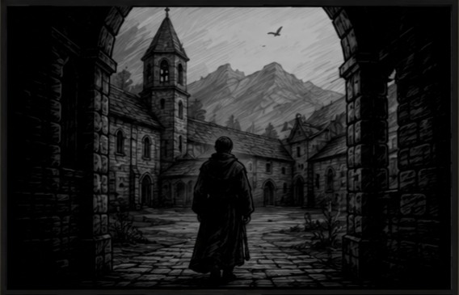
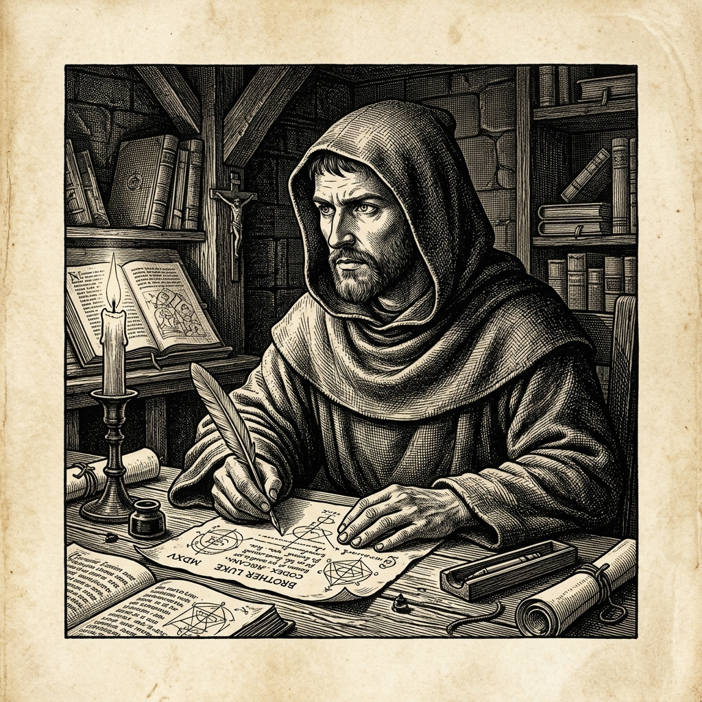

Человек с запретным знанием будущего в королевском аббатстве Сен-Дени.

Ты открываешь глаза в сырой каменной келье. На тебе — грубая шерстяная ряса, а в памяти — знание целого тысячелетия наперёд.
Ты помнишь, почему от колодезной воды умирают в лихорадке, как трёхполье спасает от мора и голода, и сколько жизней хранит чистое врачебное железо.
Но вокруг — XII век. Эпоха суеверного страха, покаяния и тёмных слухов. Здесь любое знание, не освящённое церковным уставом, быстро нарекают ересью.
